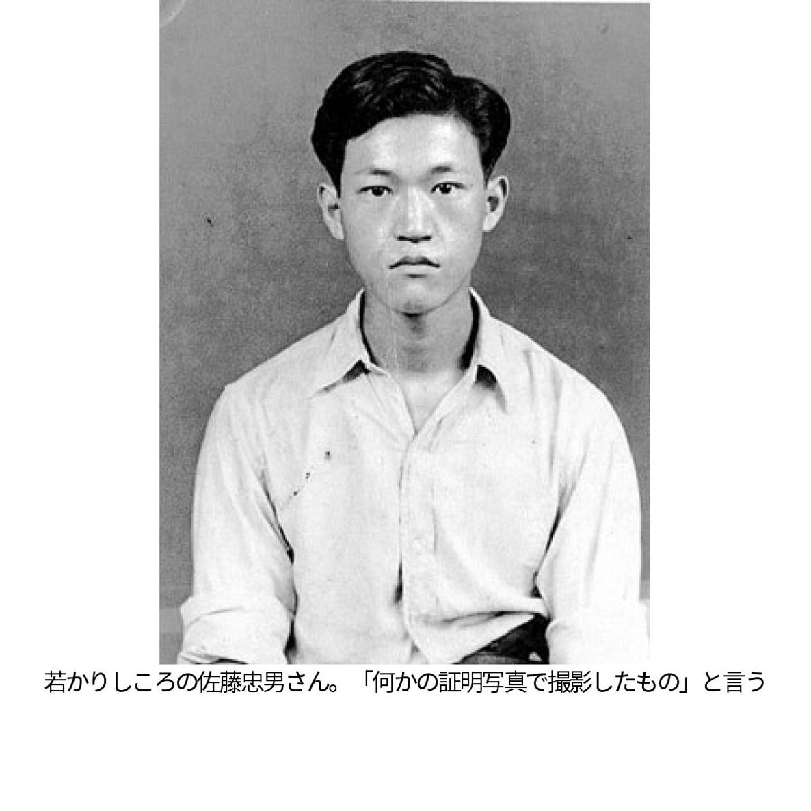

🏠
日
月
縦書き／横書き
――日本初の映画に特化した大学、日本映画大学の学長を務めています。１９７５年に映画監督の今村昌平さんが設立した横浜放送映画専門学院が始まりです
私は専門学校の初期から日本映画史を教えました。西洋の映画史は淀川長治さんでした。
当時日本の映画会社はどん底で撮影所が次々に閉鎖されました。今村さんは危機感を覚えた。撮影所は映画づくりを学ぶ教育の場ですから。それで映画界に入りたい若者たちのために、横浜で専門学校を開いた。借りた建物は閉店したボウリング場でしたよ。倉庫のような空間でしたね。
――２０１３年で３８年。三池崇史さんや李相日（リサンイル）さんら、多くの映画人が輩出しました
この学校の教員は映画の現場の親方衆。撮影所の気分を持ち込んで欲しいとお願いしています。私の役目はバランスを取ることかな。撮影現場で事故を起こさないよう注意喚起したり、学生の作品を酷評する教員に「たまにはほめろ」と言ったり。私は「君たちの作品は全て見る」と学生と約束しているので、ほぼ全部見て、必ずほめます。どこかしら見どころはあるもんです。学生にしか撮れないものがありますから。李相日の卒業作品なんてすばらしい出来だったものだから、「上映して下さい」と頭を下げて何軒も映画館を回りました。
――９６年に専門学校の校長に就任。映画評論家との両立は、ためらいませんでしたか
打診されて少し考えましたが、私の理想の教育を実践している学校だと気づきましてね。私は教育評論も書きますが、現場の親方のような人が仕事とは何かを教える手法が、学校教育で効果的だと一貫して説いてきたんです。私は終戦後、旧国鉄の鉄道教習所で学んだのですが、現場を熟知する職人に技術や知識を教わることの確かさをそのとき実感したんです。今村さんの教育手法も同様で、学生を農村に連れて行って田植えさせたり、俳優の演技指導に漫才させたり。型破りな人だったな。
――映画表現や鑑賞する側の感性が多様化したいま、映画人育成は難しいのでは
映画業界を映像文化の一分野と位置づければ、仕事は実に様々なものがあり、業界は広大です。映画は世界の共通言語ですから、映画を学ぶことで身につく教養は決して狭いものではありません。私が数多くかかわってきた映画祭のように、映画を世界と交歓させるのも重要な仕事です。買い付けや宣伝といった仕事も含めると、昔の映画産業より大きくなっています。
◇
さとう・ただお 新潟県生まれ。日本映画大学学長。著書に「日本映画史」「映画俳優」「映画でわかる世界と日本」など。紫綬褒章、韓国文化勲章受章。
――１９７０年代の後半から、アジアを中心に様々な国の映画を発掘しました。何がきっかけだったのでしょう
原体験になっているのは、占領下にあった頃に見たメキシコ映画です。すっくと立つインディオの、実に堂々とした姿に感動してね。惨めな敗戦国日本と戦勝国アメリカという構造ではない世界に触れたくて、色々な国の映画をできる限り見ました。
その後、映画評論家になって海外に行く機会を度々得ました。７０年代後半、国際交流基金の依頼を受け、山田洋次さんと「幸福の黄色いハンカチ」の宣伝でアジアを回りました。行く先々で観光を勧められましたが、私と山田さんは先方に「観光よりも、あなたの国の映画を見たい」と。たくさんの作品を見せてもらいました。それで帰国後、国際交流基金の方々に「いろいろな国の映画を日本人に見せることが文化交流の基本だ」と説きました。
中国や韓国の映画界とは、早くから交流する機会に恵まれました。中国に行ったのは文化大革命が終わった直後。徳間書店の創業者、徳間康快さんから「中国の映画人が世界と断絶した１０年間について、彼らに話してほしい」と頼まれた。現地で話し終えた後、３５年前後の映画を見せてほしいと頼みました。映画史家の岩崎昶（あきら）さんが、その頃につくられた中国映画をほめていたからです。何本か見ましたが、これが本当にすばらしい。絶賛しました。以来、中国の映画界と信頼関係を深めてきました。
そして韓国。日韓の国交が回復する前、韓国のジャーナリストが私を訪ねてきました。韓国の映画人から「日本に行ったら佐藤忠男に色々聞いてこい」と言われたと。私と同年代の韓国の人は日本語が読めるから、私の本を読んでいる映画人が相当数いると知りました。後日、韓国を訪ねた際に歓待してくれました。
――アジアで発掘した作品に忘れがたい傑作があった
インドのケララ州で見たマラヤラム語映画「魔法使いのおじいさん」は、小津安二郎の「東京物語」と並ぶ我が生涯のベスト。実に天衣無縫な映画です。この作品は、日本映画大学がある川崎市の市民ミュージアムと、私が長らくかかわった「アジアフォーカス・福岡国際映画祭」を主催する福岡市の総合図書館にフィルムがあります。日本の人に見てもらいたかったし、高温多湿というフィルムに致命的な現地の気候から作品を守り、永久保管するためでもあります。
――日本映画大学にも、早くからアジアと交流してきた佐藤学長の姿勢が反映されていますね
アジアからたくさん留学生がやって来て、様々な形で映画界で活躍しています。今月は、中国の留学生だったジャン・チンミン監督が、自分の体験をもとに撮った「東京に来たばかり」という作品が公開されました。
昨年から韓国芸術総合学校との提携にも乗り出しました。本格始動はこれからですが、様々なことで手を携えていきたいと思っています。
――新潟市の出身ですね
信濃川の河口の近くで、新潟鉄工所という大企業の下請けの町工場がたくさんありました。夜中になって、ようやく機械の音が止まるようなところでした。
――戦時中、少年飛行兵に自ら志願しました
中学進学を諦めたからです。当時は義務教育ではありません。中学受験で番号札をつけて整列していたら、校長がやって来て、明治天皇の御製（和歌）を３首朗読して出ていった。きょとんとしたら落ちました。小学校の先生が後で言うには、「あの校長は大変な愛国者。天皇の御製を受験生に聞かせ、教師に反応をチェックさせる」。それが学校教育なら受験なんてやめてやると。残る選択肢は少年飛行兵か満蒙開拓青少年義勇軍。満州は貸本屋がないから嫌だったんです。
――貸本屋。幼いころから読書家だったそうですね
私は８人兄弟の末っ子。病気だった４番目の兄のために貸本屋に行くのが私の役目でした。自分も借りてきていいと母がお駄賃をくれたので、「少年講談」という講談のシリーズ本や、冒険小説が載った「少年倶楽部」をむさぼり読みました。戦争が終わり、当時いた和歌山県の高野山海軍航空隊から新潟に戻る満員列車の通路で、大衆小説集「譚海（たんかい）」を読む人がいて、輝いて見えました。「そうか、また本が読めるんだ」とうれしかったんです。
――映画好きになったのは
敗戦の翌年、１９４６年にアメリカ映画の上映が再開され、「アメリカの支配下だから見ておかなくては」と思いました。「春の序曲」という映画に感激してね。若い女性とすれ違った男たちが笑顔で振り返る場面があって、その表情が実にすがすがしい。女性尊重の表現に「こちらの文化がいいなあ」と。アメリカ軍は、日本人の民主主義教育に役立つと映画を見せた。私には確実に効果がありました。でも、アメリカ映画ばかり見ていると敗戦国であることがますます惨めになる。やがてイタリアやフランスの映画も公開され始め、「戦勝国対敗戦国」という構図だけではない世界全体のイメージをつかみたくて、夢中で映画館に通いました。
その後、新潟にあった旧国鉄の職員を養成する鉄道教習所に入りました。もらった給料で映画を見て、古本も山ほど買って。休みは夜行で東京に出て神田で古本を買い込み、夜行で戻る。全寮制だったから仲間といろいろ熱く語り合いました。青春でした。
――教習所を卒業し、神奈川県の大船駅に赴任しました
映画の撮影所があったからです。憧れていた吉村公三郎監督や渋谷実監督と駅ですれ違って。もっとも公務員の大リストラの波に遭い、３カ月でクビになってしまいましたが。
――映画評論家への道は雑誌投稿から始まったそうですね
国鉄の職員だった１８歳でリストラに遭いました。ふるさとの新潟に戻り、信越電気通信工作工場の工員として働く一方、映画でメシが食える方法を考えました。
私と同年代で映画の世界に入った人は大学出のエリート。自分のように学歴がなくてもやれるのはシナリオ作家だという結論に達し、仕事の合間にシナリオを勉強し始めたんです。その傍らで映画の批評も書き、「キネマ旬報」や「映画評論」といった雑誌に投稿しました。よく載せてくれて、原稿料まで頂けた。実利を兼ねて投稿し続けるうち、限られた字数では物足りなくなった。出会ったのが「思想の科学」です。「投稿歓迎、枚数無制限」とありました。
――当時の「思想の科学」編集長は鶴見俊輔さんですね
「任侠（にんきょう）について」という評論を投稿したら、鶴見さんから私の投稿と同じぐらいの、原稿用紙にして５、６枚もの分量の手紙を頂きました。「大変感心した。これくらいの評論が書けるなら、あなたは立派な評論家になれる」と。驚きました。
「思想の科学」編集部に鶴見さんを訪ね、様々な学者を紹介して頂きました。多くの方から「労働者の実感がこもっている」と評価してもらえましたが、経験に基づくだけでは評論家としてもたないと不安も感じた。丸山真男さんには「また実感かね」と言われましたし。しかし鶴見さんは「この人は工場で働きながら分析的な文章を書く人です」と紹介して下さった。うれしかったですね。鶴見さんの言葉を励みに、理論的なことを書いてきたつもりです。
――ご自身の評論スタイルが固まったのはいつごろですか
投稿の常連から「映画評論」の社員になったのが確か２６歳でした。その数年後、大衆誌「少年倶楽部（くらぶ）」を題材に論評を書いたときです。あの雑誌の書き手、つまり手塚治虫や江戸川乱歩といった書き手たちは、大衆的なメディアの中で独創的な読み物をつくり出していましたが、当時の児童文化の研究者からは「通俗作家」として無視されていた。そこで私が「『少年倶楽部』の方が児童文化の主流だ」と書いたものですから、上品な児童文化を推奨する人たちから大反論が寄せられ、賛否両論が巻き起こりました。
自分の投じた論評が一つの分野で論争を巻き起こしたことに、「ああ、このやり方でいいんだ」と思いましたね。
映画評論に関していえば、映画を評することが世界文化史を考え、論じることだと気づいたときですね。あらゆるジャンルの映画を見て、世界のどんな場所でも映画がつくられていることを確認しようと心がけてきました。
――映画に限らず、様々な分野の評論を書いています
自分がおもしろいと感じたことを評してきただけです。学問的には評価されないことに興味を抱き、その意味を見いだしてきたように思います。ひたすら楽しんできましたね。
――１９８９年、日本の映画の発展に貢献した人をたたえる川喜多賞を夫妻で受賞しました。映画祭のディレクターとコーディネーターを２人で務めるなど、久子さんは公私で佐藤さんを支えてきましたね
受賞の知らせを受けたとき、川喜多かしこさんから「久子さんと一緒に」と告げられました。ところが妻は恐縮して「受けられません」と言う。川喜多さんに説得をお願いしました。我が家はこれまでいろんな国の映画人を泊めてきたんです。最長は３カ月、ポーランドの映画研究者でした。川喜多さんはそのことを挙げて、「わたしでもそこまではやれない」と説き伏せたようです。
――久子さんと出会ったのは新潟の工場にいた時代ですね
横浜で生まれ育った妻は、空襲で焼け出されて両親の郷里である新潟に来ました。私がいた工場は職員の半数以上が臨時雇いで、私と同様、彼女も臨時の職員だった。品があるお嬢さんでしっかり者。言い寄る男が多かった。私は映画に誘いました。映画評論を雑誌に書いていることは、彼女も知っていましたから。
――５７年に映画評の常連投稿者から雑誌「映画評論」の社員になり、ご自身は東京へ。東京から恋文を書いたそうですね
ずいぶん書きました。何通書いたか、分かりません。返事が来たのはずいぶん後でしたね。全部保管してあるらしいけれど、私は見たことがないな。
――アジアの映画を探す旅もほとんど２人で出かけました
年に７、８回、２人でアジアを回った時期が１５年ほど続きました。私が気に入った映画について、彼女が海外の映画関係者といろいろ交渉してくれました。英語が出来るし、パソコンも独学で覚えてくれた。何より社交性に富んでいる。これまで多くの人に「佐藤さんは付き合いにくいけれど、奥さんはチャーミング」と言われました。彼女は今年、高峰秀子さんの遺志で設立された映画界の裏方の人を顕彰する「一本のクギを讃（たた）える会」からも賞を受けました。
――半世紀以上も映画文化にかかわってきましたが、ご自身で「まだ、これはやれていない」と思うことはありますか
私が学長を務める日本映画大学と韓国の芸術大学が提携したように、アジアの映画界と手を携えられる機会を広げたい。と同時に、これまで通り誰も評価しないものに光を当て、映画史に残していきます。どこかの国に、まだ誰も気づいていない傑作が隠れているはずですから。
著 者 朝日新聞（映画評論家・佐藤忠男、聞き手・浜田奈美）
発行所 朝日新聞社
〒１０４―８０１１ 東京都中央区築地５―３―２
http://www.asahi.com/
発売所 朝日新聞社デジタル本部
〒１０４―８０１１ 東京都中央区築地５―３―２
http://www.asahi.com
２０１３年１２月１３日 ＷＥＢ新書版発行
２０１５年１２月３１日 ＥＰＵＢ版発行
©2015 The Asahi Shimbun Company
All rights reserved. No reproduction or republication without written permission.
ISBN 978-4-86612-519-0
〈ご注意〉本コンテンツは、購入者個人の閲覧目的のためのものです。私的範囲を越える利用・譲渡などは禁止します。
〈おことわり〉本コンテンツは２０１３年１２月１３日に刊行されたＷＥＢ新書版を底本としました。ＥＰＵＢ版の刊行にともない、体裁や表記を直した場合があります。 企業、組織などの名称、人物の役職、肩書等はいずれも記事初出当時のものです。
| 映画は世界の共通言語 三池崇史、李相日らを育てた佐藤忠男の仕事 (朝日新聞デジタルSELECT) | |
| 朝日新聞 | |
| (2013) | |
内容紹介
日本映画大学学長で映画評論家の佐藤忠男は少年飛行兵、国鉄職員を経て、工場につとめながらシナリオ作家を目指すうち、映画評論の世界に。「思想の科学」編集長の鶴見俊輔に見出され、本格的な評論家活動へ足を踏み入れた。１９７０年代からアジアの映画を積極的に発掘し、世界の映画人に太いパイプを持つ。「映画」というメディアの発展と変化をつぶさに目撃した映画人の、深い愛情と理解にあふれた回顧談。
初出
朝日新聞 二〇一三年 十一月二十五日～二十九日
※本文内の画像は、ＷＥＢ用のものを転用しているため、解像度が低い場合がありますが、ご了承ください。
第１章 学生の作品、必ずどこかほめる
――日本初の映画に特化した大学、日本映画大学の学長を務めています。１９７５年に映画監督の今村昌平さんが設立した横浜放送映画専門学院が始まりです
私は専門学校の初期から日本映画史を教えました。西洋の映画史は淀川長治さんでした。
当時日本の映画会社はどん底で撮影所が次々に閉鎖されました。今村さんは危機感を覚えた。撮影所は映画づくりを学ぶ教育の場ですから。それで映画界に入りたい若者たちのために、横浜で専門学校を開いた。借りた建物は閉店したボウリング場でしたよ。倉庫のような空間でしたね。
――２０１３年で３８年。三池崇史さんや李相日（リサンイル）さんら、多くの映画人が輩出しました
この学校の教員は映画の現場の親方衆。撮影所の気分を持ち込んで欲しいとお願いしています。私の役目はバランスを取ることかな。撮影現場で事故を起こさないよう注意喚起したり、学生の作品を酷評する教員に「たまにはほめろ」と言ったり。私は「君たちの作品は全て見る」と学生と約束しているので、ほぼ全部見て、必ずほめます。どこかしら見どころはあるもんです。学生にしか撮れないものがありますから。李相日の卒業作品なんてすばらしい出来だったものだから、「上映して下さい」と頭を下げて何軒も映画館を回りました。
――９６年に専門学校の校長に就任。映画評論家との両立は、ためらいませんでしたか
打診されて少し考えましたが、私の理想の教育を実践している学校だと気づきましてね。私は教育評論も書きますが、現場の親方のような人が仕事とは何かを教える手法が、学校教育で効果的だと一貫して説いてきたんです。私は終戦後、旧国鉄の鉄道教習所で学んだのですが、現場を熟知する職人に技術や知識を教わることの確かさをそのとき実感したんです。今村さんの教育手法も同様で、学生を農村に連れて行って田植えさせたり、俳優の演技指導に漫才させたり。型破りな人だったな。
――映画表現や鑑賞する側の感性が多様化したいま、映画人育成は難しいのでは
映画業界を映像文化の一分野と位置づければ、仕事は実に様々なものがあり、業界は広大です。映画は世界の共通言語ですから、映画を学ぶことで身につく教養は決して狭いものではありません。私が数多くかかわってきた映画祭のように、映画を世界と交歓させるのも重要な仕事です。買い付けや宣伝といった仕事も含めると、昔の映画産業より大きくなっています。
◇
さとう・ただお 新潟県生まれ。日本映画大学学長。著書に「日本映画史」「映画俳優」「映画でわかる世界と日本」など。紫綬褒章、韓国文化勲章受章。
第２章 アジア回り「あなたの国の映画が見たい」
――１９７０年代の後半から、アジアを中心に様々な国の映画を発掘しました。何がきっかけだったのでしょう
原体験になっているのは、占領下にあった頃に見たメキシコ映画です。すっくと立つインディオの、実に堂々とした姿に感動してね。惨めな敗戦国日本と戦勝国アメリカという構造ではない世界に触れたくて、色々な国の映画をできる限り見ました。
その後、映画評論家になって海外に行く機会を度々得ました。７０年代後半、国際交流基金の依頼を受け、山田洋次さんと「幸福の黄色いハンカチ」の宣伝でアジアを回りました。行く先々で観光を勧められましたが、私と山田さんは先方に「観光よりも、あなたの国の映画を見たい」と。たくさんの作品を見せてもらいました。それで帰国後、国際交流基金の方々に「いろいろな国の映画を日本人に見せることが文化交流の基本だ」と説きました。
中国や韓国の映画界とは、早くから交流する機会に恵まれました。中国に行ったのは文化大革命が終わった直後。徳間書店の創業者、徳間康快さんから「中国の映画人が世界と断絶した１０年間について、彼らに話してほしい」と頼まれた。現地で話し終えた後、３５年前後の映画を見せてほしいと頼みました。映画史家の岩崎昶（あきら）さんが、その頃につくられた中国映画をほめていたからです。何本か見ましたが、これが本当にすばらしい。絶賛しました。以来、中国の映画界と信頼関係を深めてきました。
そして韓国。日韓の国交が回復する前、韓国のジャーナリストが私を訪ねてきました。韓国の映画人から「日本に行ったら佐藤忠男に色々聞いてこい」と言われたと。私と同年代の韓国の人は日本語が読めるから、私の本を読んでいる映画人が相当数いると知りました。後日、韓国を訪ねた際に歓待してくれました。
――アジアで発掘した作品に忘れがたい傑作があった
インドのケララ州で見たマラヤラム語映画「魔法使いのおじいさん」は、小津安二郎の「東京物語」と並ぶ我が生涯のベスト。実に天衣無縫な映画です。この作品は、日本映画大学がある川崎市の市民ミュージアムと、私が長らくかかわった「アジアフォーカス・福岡国際映画祭」を主催する福岡市の総合図書館にフィルムがあります。日本の人に見てもらいたかったし、高温多湿というフィルムに致命的な現地の気候から作品を守り、永久保管するためでもあります。
――日本映画大学にも、早くからアジアと交流してきた佐藤学長の姿勢が反映されていますね
アジアからたくさん留学生がやって来て、様々な形で映画界で活躍しています。今月は、中国の留学生だったジャン・チンミン監督が、自分の体験をもとに撮った「東京に来たばかり」という作品が公開されました。
昨年から韓国芸術総合学校との提携にも乗り出しました。本格始動はこれからですが、様々なことで手を携えていきたいと思っています。
第３章 読書と映画に明け暮れた青春時代
――新潟市の出身ですね
信濃川の河口の近くで、新潟鉄工所という大企業の下請けの町工場がたくさんありました。夜中になって、ようやく機械の音が止まるようなところでした。
――戦時中、少年飛行兵に自ら志願しました
中学進学を諦めたからです。当時は義務教育ではありません。中学受験で番号札をつけて整列していたら、校長がやって来て、明治天皇の御製（和歌）を３首朗読して出ていった。きょとんとしたら落ちました。小学校の先生が後で言うには、「あの校長は大変な愛国者。天皇の御製を受験生に聞かせ、教師に反応をチェックさせる」。それが学校教育なら受験なんてやめてやると。残る選択肢は少年飛行兵か満蒙開拓青少年義勇軍。満州は貸本屋がないから嫌だったんです。
――貸本屋。幼いころから読書家だったそうですね
私は８人兄弟の末っ子。病気だった４番目の兄のために貸本屋に行くのが私の役目でした。自分も借りてきていいと母がお駄賃をくれたので、「少年講談」という講談のシリーズ本や、冒険小説が載った「少年倶楽部」をむさぼり読みました。戦争が終わり、当時いた和歌山県の高野山海軍航空隊から新潟に戻る満員列車の通路で、大衆小説集「譚海（たんかい）」を読む人がいて、輝いて見えました。「そうか、また本が読めるんだ」とうれしかったんです。
――映画好きになったのは
敗戦の翌年、１９４６年にアメリカ映画の上映が再開され、「アメリカの支配下だから見ておかなくては」と思いました。「春の序曲」という映画に感激してね。若い女性とすれ違った男たちが笑顔で振り返る場面があって、その表情が実にすがすがしい。女性尊重の表現に「こちらの文化がいいなあ」と。アメリカ軍は、日本人の民主主義教育に役立つと映画を見せた。私には確実に効果がありました。でも、アメリカ映画ばかり見ていると敗戦国であることがますます惨めになる。やがてイタリアやフランスの映画も公開され始め、「戦勝国対敗戦国」という構図だけではない世界全体のイメージをつかみたくて、夢中で映画館に通いました。
その後、新潟にあった旧国鉄の職員を養成する鉄道教習所に入りました。もらった給料で映画を見て、古本も山ほど買って。休みは夜行で東京に出て神田で古本を買い込み、夜行で戻る。全寮制だったから仲間といろいろ熱く語り合いました。青春でした。
――教習所を卒業し、神奈川県の大船駅に赴任しました
映画の撮影所があったからです。憧れていた吉村公三郎監督や渋谷実監督と駅ですれ違って。もっとも公務員の大リストラの波に遭い、３カ月でクビになってしまいましたが。

第４章 工員の傍ら雑誌投稿、評価が励みに
――映画評論家への道は雑誌投稿から始まったそうですね
国鉄の職員だった１８歳でリストラに遭いました。ふるさとの新潟に戻り、信越電気通信工作工場の工員として働く一方、映画でメシが食える方法を考えました。
私と同年代で映画の世界に入った人は大学出のエリート。自分のように学歴がなくてもやれるのはシナリオ作家だという結論に達し、仕事の合間にシナリオを勉強し始めたんです。その傍らで映画の批評も書き、「キネマ旬報」や「映画評論」といった雑誌に投稿しました。よく載せてくれて、原稿料まで頂けた。実利を兼ねて投稿し続けるうち、限られた字数では物足りなくなった。出会ったのが「思想の科学」です。「投稿歓迎、枚数無制限」とありました。
――当時の「思想の科学」編集長は鶴見俊輔さんですね
「任侠（にんきょう）について」という評論を投稿したら、鶴見さんから私の投稿と同じぐらいの、原稿用紙にして５、６枚もの分量の手紙を頂きました。「大変感心した。これくらいの評論が書けるなら、あなたは立派な評論家になれる」と。驚きました。
「思想の科学」編集部に鶴見さんを訪ね、様々な学者を紹介して頂きました。多くの方から「労働者の実感がこもっている」と評価してもらえましたが、経験に基づくだけでは評論家としてもたないと不安も感じた。丸山真男さんには「また実感かね」と言われましたし。しかし鶴見さんは「この人は工場で働きながら分析的な文章を書く人です」と紹介して下さった。うれしかったですね。鶴見さんの言葉を励みに、理論的なことを書いてきたつもりです。
――ご自身の評論スタイルが固まったのはいつごろですか
投稿の常連から「映画評論」の社員になったのが確か２６歳でした。その数年後、大衆誌「少年倶楽部（くらぶ）」を題材に論評を書いたときです。あの雑誌の書き手、つまり手塚治虫や江戸川乱歩といった書き手たちは、大衆的なメディアの中で独創的な読み物をつくり出していましたが、当時の児童文化の研究者からは「通俗作家」として無視されていた。そこで私が「『少年倶楽部』の方が児童文化の主流だ」と書いたものですから、上品な児童文化を推奨する人たちから大反論が寄せられ、賛否両論が巻き起こりました。
自分の投じた論評が一つの分野で論争を巻き起こしたことに、「ああ、このやり方でいいんだ」と思いましたね。
映画評論に関していえば、映画を評することが世界文化史を考え、論じることだと気づいたときですね。あらゆるジャンルの映画を見て、世界のどんな場所でも映画がつくられていることを確認しようと心がけてきました。
――映画に限らず、様々な分野の評論を書いています
自分がおもしろいと感じたことを評してきただけです。学問的には評価されないことに興味を抱き、その意味を見いだしてきたように思います。ひたすら楽しんできましたね。
第５章 妻と二人三脚、映画人生は続く
――１９８９年、日本の映画の発展に貢献した人をたたえる川喜多賞を夫妻で受賞しました。映画祭のディレクターとコーディネーターを２人で務めるなど、久子さんは公私で佐藤さんを支えてきましたね
受賞の知らせを受けたとき、川喜多かしこさんから「久子さんと一緒に」と告げられました。ところが妻は恐縮して「受けられません」と言う。川喜多さんに説得をお願いしました。我が家はこれまでいろんな国の映画人を泊めてきたんです。最長は３カ月、ポーランドの映画研究者でした。川喜多さんはそのことを挙げて、「わたしでもそこまではやれない」と説き伏せたようです。
――久子さんと出会ったのは新潟の工場にいた時代ですね
横浜で生まれ育った妻は、空襲で焼け出されて両親の郷里である新潟に来ました。私がいた工場は職員の半数以上が臨時雇いで、私と同様、彼女も臨時の職員だった。品があるお嬢さんでしっかり者。言い寄る男が多かった。私は映画に誘いました。映画評論を雑誌に書いていることは、彼女も知っていましたから。
――５７年に映画評の常連投稿者から雑誌「映画評論」の社員になり、ご自身は東京へ。東京から恋文を書いたそうですね
ずいぶん書きました。何通書いたか、分かりません。返事が来たのはずいぶん後でしたね。全部保管してあるらしいけれど、私は見たことがないな。
――アジアの映画を探す旅もほとんど２人で出かけました
年に７、８回、２人でアジアを回った時期が１５年ほど続きました。私が気に入った映画について、彼女が海外の映画関係者といろいろ交渉してくれました。英語が出来るし、パソコンも独学で覚えてくれた。何より社交性に富んでいる。これまで多くの人に「佐藤さんは付き合いにくいけれど、奥さんはチャーミング」と言われました。彼女は今年、高峰秀子さんの遺志で設立された映画界の裏方の人を顕彰する「一本のクギを讃（たた）える会」からも賞を受けました。
――半世紀以上も映画文化にかかわってきましたが、ご自身で「まだ、これはやれていない」と思うことはありますか
私が学長を務める日本映画大学と韓国の芸術大学が提携したように、アジアの映画界と手を携えられる機会を広げたい。と同時に、これまで通り誰も評価しないものに光を当て、映画史に残していきます。どこかの国に、まだ誰も気づいていない傑作が隠れているはずですから。

映画は世界の共通言語 三池崇史、李相日らを育てた佐藤忠男の仕事
著 者 朝日新聞（映画評論家・佐藤忠男、聞き手・浜田奈美）
発行所 朝日新聞社
〒１０４―８０１１ 東京都中央区築地５―３―２
http://www.asahi.com/
発売所 朝日新聞社デジタル本部
〒１０４―８０１１ 東京都中央区築地５―３―２
http://www.asahi.com
２０１３年１２月１３日 ＷＥＢ新書版発行
２０１５年１２月３１日 ＥＰＵＢ版発行
©2015 The Asahi Shimbun Company
All rights reserved. No reproduction or republication without written permission.
ISBN 978-4-86612-519-0
〈ご注意〉本コンテンツは、購入者個人の閲覧目的のためのものです。私的範囲を越える利用・譲渡などは禁止します。
〈おことわり〉本コンテンツは２０１３年１２月１３日に刊行されたＷＥＢ新書版を底本としました。ＥＰＵＢ版の刊行にともない、体裁や表記を直した場合があります。 企業、組織などの名称、人物の役職、肩書等はいずれも記事初出当時のものです。